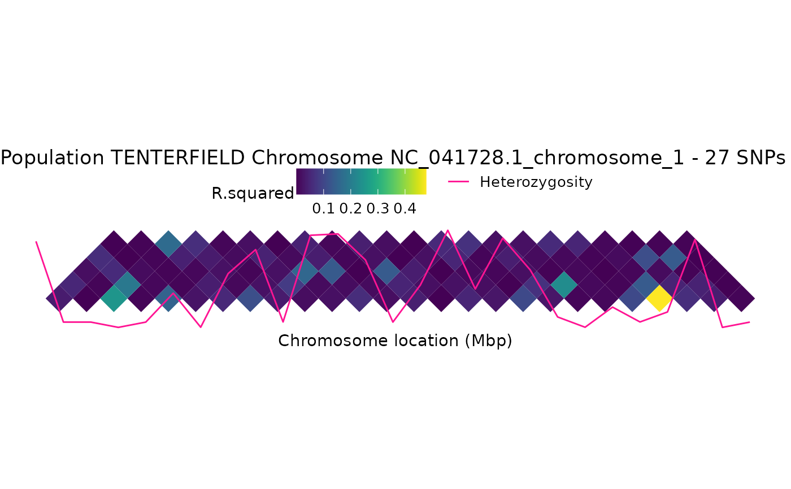
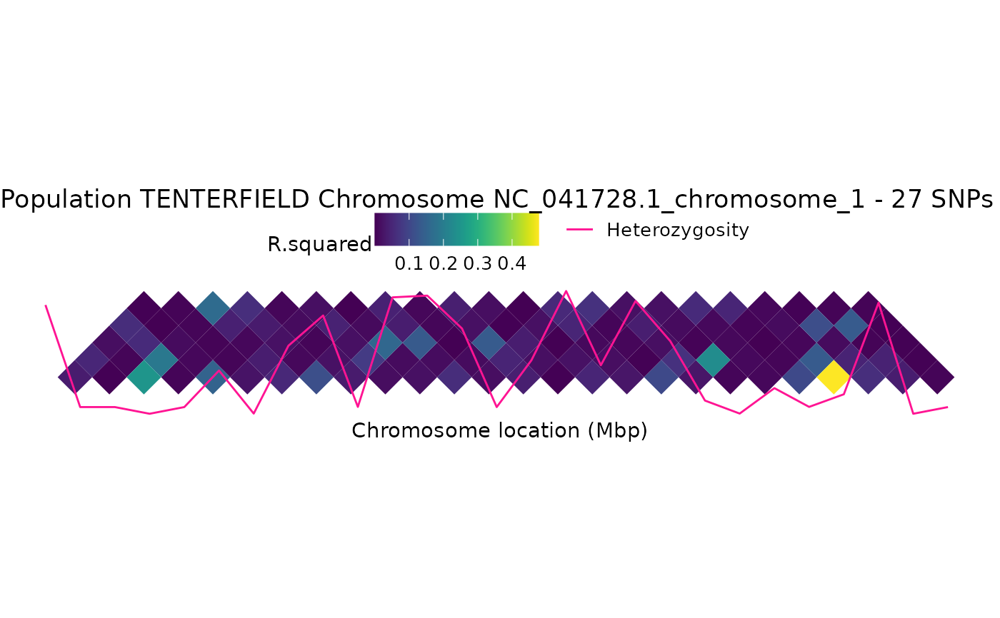

Visualize patterns of linkage disequilibrium and identification of haplotypes
gl.ld.haplotype.RdThis function plots a Linkage disequilibrium (LD) heatmap, where the colour shading indicates the strength of LD. Chromosome positions (Mbp) are shown on the horizontal axis, and haplotypes appear as triangles and delimited by dark yellow vertical lines. Numbers identifying each haplotype are shown in the upper part of the plot.
The heatmap also shows heterozygosity for each SNP.
The function identifies haplotypes based on contiguous SNPs that are in
linkage disequilibrium using as threshold ld_threshold_haplo and
containing more than min_snps SNPs.
gl.ld.haplotype(
x,
pop_name = NULL,
chrom_name = NULL,
ld_max_pairwise = 1e+07,
maf = 0.05,
ld_stat = "R.squared",
ind.limit = 10,
min_snps = 10,
ld_threshold_haplo = 0.5,
coordinates = NULL,
color_haplo = "viridis",
color_het = "deeppink",
plot.out = TRUE,
save2tmp = FALSE,
verbose = NULL
)Arguments
- x
Name of the genlight object containing the SNP data [required].
- pop_name
Name of the population to analyse. If NULL all the populations are analised [default NULL].
- chrom_name
Nme of the chromosome to analyse. If NULL all the chromosomes are analised [default NULL].
- ld_max_pairwise
Maximum distance in number of base pairs at which LD should be calculated [default 10000000].
- maf
Minor allele frequency (by population) threshold to filter out loci. If a value > 1 is provided it will be interpreted as MAC (i.e. the minimum number of times an allele needs to be observed) [default 0.05].
- ld_stat
The LD measure to be calculated: "LLR", "OR", "Q", "Covar", "D.prime", "R.squared", and "R". See
ld(package snpStats) for details [default "R.squared"].- ind.limit
Minimum number of individuals that a population should contain to take it in account to report loci in LD [default 10].
- min_snps
Minimum number of SNPs that should have a haplotype to call it [default 10].
- ld_threshold_haplo
Minimum LD between adjacent SNPs to call a haplotype [default 0.5].
- coordinates
A vector of two elements with the start and end coordinates in base pairs to which restrict the analysis e.g. c(1,1000000) [default NULL].
- color_haplo
Color palette for haplotype plot. See details [default "viridis"].
- color_het
Color for heterozygosity [default "deeppink"].
- plot.out
Specify if heatmap plot is to be produced [default TRUE].
- save2tmp
If TRUE, saves any ggplots and listings to the session temporary directory (tempdir) [default FALSE].
- verbose
Verbosity: 0, silent or fatal errors; 1, begin and end; 2, progress log; 3, progress and results summary; 5, full report [default 2, unless specified using gl.set.verbosity].
Value
A table with the haplotypes that were identified.
Details
The information for SNP's position should be stored in the genlight accessor "@position" and the SNP's chromosome name in the accessor "@chromosome" (see examples). The function will then calculate LD within each chromosome.
The output of the function includes a table with the haplotypes that were identified and their location.
Colors of the heatmap (color_haplo) are based on the function
scale_fill_viridis from package viridis.
Other color palettes options are "magma", "inferno", "plasma", "viridis",
"cividis", "rocket", "mako" and "turbo".
See also
Other ld functions:
gl.ld.distance()
Examples
require("dartR.data")
x <- platypus.gl
x <- gl.filter.callrate(x,threshold = 1)
#> Starting gl.filter.callrate
#> Processing genlight object with SNP data
#> Warning: data include loci that are scored NA across all individuals.
#> Consider filtering using gl <- gl.filter.allna(gl)
#> Warning: Data may include monomorphic loci in call rate
#> calculations for filtering
#> Recalculating Call Rate
#> Removing loci based on Call Rate, threshold = 1
#>
 #> Completed: gl.filter.callrate
#>
x$chromosome <- as.factor(x$other$loc.metrics$Chrom_Platypus_Chrom_NCBIv1)
x$position <- x$other$loc.metrics$ChromPos_Platypus_Chrom_NCBIv1
ld_res <- gl.ld.haplotype(x,chrom_name = "NC_041728.1_chromosome_1",
ld_max_pairwise = 10000000 )
#> Starting gl.ld.haplotype
#> Processing genlight object with SNP data
#> Calculating pairwise LD in population SEVERN_ABOVE
#> Analysing chromosome NC_041728.1_chromosome_1
#> The maximum distance at which LD should be calculated
#> (ld_max_pairwise) is too short for chromosome NC_041728.1_chromosome_1 . Setting this distance to 41378719 bp
#>
#> Regions defined for each Polygons
#> No haplotypes were identified for chromosome NC_041728.1_chromosome_1
#>
#> Calculating pairwise LD in population SEVERN_BELOW
#> Analysing chromosome NC_041728.1_chromosome_1
#> The maximum distance at which LD should be calculated
#> (ld_max_pairwise) is too short for chromosome NC_041728.1_chromosome_1 . Setting this distance to 39408304 bp
#>
#> Regions defined for each Polygons

#> No haplotypes were identified for chromosome NC_041728.1_chromosome_1
#>
#> Calculating pairwise LD in population TENTERFIELD
#> Analysing chromosome NC_041728.1_chromosome_1
#> The maximum distance at which LD should be calculated
#> (ld_max_pairwise) is too short for chromosome NC_041728.1_chromosome_1 . Setting this distance to 33814744 bp
#>
#> Regions defined for each Polygons
#> Completed: gl.filter.callrate
#>
x$chromosome <- as.factor(x$other$loc.metrics$Chrom_Platypus_Chrom_NCBIv1)
x$position <- x$other$loc.metrics$ChromPos_Platypus_Chrom_NCBIv1
ld_res <- gl.ld.haplotype(x,chrom_name = "NC_041728.1_chromosome_1",
ld_max_pairwise = 10000000 )
#> Starting gl.ld.haplotype
#> Processing genlight object with SNP data
#> Calculating pairwise LD in population SEVERN_ABOVE
#> Analysing chromosome NC_041728.1_chromosome_1
#> The maximum distance at which LD should be calculated
#> (ld_max_pairwise) is too short for chromosome NC_041728.1_chromosome_1 . Setting this distance to 41378719 bp
#>
#> Regions defined for each Polygons
#> No haplotypes were identified for chromosome NC_041728.1_chromosome_1
#>
#> Calculating pairwise LD in population SEVERN_BELOW
#> Analysing chromosome NC_041728.1_chromosome_1
#> The maximum distance at which LD should be calculated
#> (ld_max_pairwise) is too short for chromosome NC_041728.1_chromosome_1 . Setting this distance to 39408304 bp
#>
#> Regions defined for each Polygons

#> No haplotypes were identified for chromosome NC_041728.1_chromosome_1
#>
#> Calculating pairwise LD in population TENTERFIELD
#> Analysing chromosome NC_041728.1_chromosome_1
#> The maximum distance at which LD should be calculated
#> (ld_max_pairwise) is too short for chromosome NC_041728.1_chromosome_1 . Setting this distance to 33814744 bp
#>
#> Regions defined for each Polygons
 #> No haplotypes were identified for chromosome NC_041728.1_chromosome_1
#>
#> No haplotypes were identified for chromosome NC_041728.1_chromosome_1
#>
 #> NULL
#> [1] population chromosome haplotype start
#> [5] end start_ld_plot end_ld_plot midpoint
#> [9] midpoint_ld_plot labels
#> <0 rows> (or 0-length row.names)
#> Completed: gl.ld.haplotype
#>
#> NULL
#> [1] population chromosome haplotype start
#> [5] end start_ld_plot end_ld_plot midpoint
#> [9] midpoint_ld_plot labels
#> <0 rows> (or 0-length row.names)
#> Completed: gl.ld.haplotype
#>